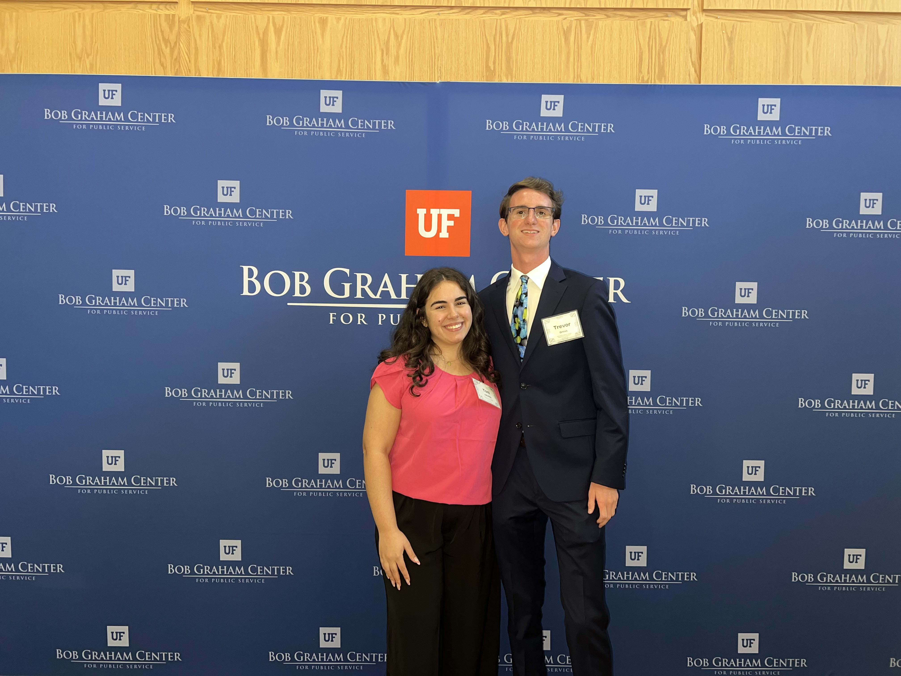

My research spans distributed optimization, multi-agent control, NLP, and AI ethics. I conduct undergraduate research in the GATAS Lab at the Florida Institute of National Security (FINS) at UF, and I am completing an honors thesis on sheaf-theoretic control architectures for heterogeneous UAV swarms through the University Scholars Program.
My published work was accepted to the IEEE Conference on Decision and Control 2025 and presented in Rio de Janeiro. I have also conducted NLP research at the PhD level and presented AI ethics research through the Bob Graham Center for Public Service.
A Sheaf-LQR Architecture for Heterogeneous Formation Control
My honors thesis develops a sheaf-theoretic control architecture for heterogeneous multi-agent systems, extending the sheaf Laplacian framework to coordinate agents with differing dynamics. I formalize the problem as a distributed LQR design over a cellular sheaf, enabling locally optimal control policies to be composed into a globally coherent formation control strategy.
The work targets heterogeneous UAV swarms and demonstrates that sheaf-structured communication can enforce consensus across agents with distinct state spaces. I presented this research at the UF Spring Research Symposium and am preparing a journal submission for publication.

Distributed Multi-agent Coordination over Cellular Sheaves
Co-authored and published research on distributed optimization for multi-agent coordination using cellular sheaf theory. I developed distributed optimization algorithms to improve coordination across decentralized systems, expanded quadrotor control dynamics research using sheaf Laplacians and LQR, and integrated reinforcement learning to enhance decision-making across networked agents.
Accepted to the IEEE Conference on Decision and Control 2025, one of the premier international conferences in systems and control engineering. I presented the work in Rio de Janeiro and have previously presented to industry professionals and Department of Defense representatives.
Read the Paper on arXiv
Unsupervised Parsing of AMR Graphs
Conducted NLP research in a PhD-level course under Dr. Bonnie Dorr, developing the first known framework for parsing Abstract Meaning Representation (AMR) graphs without pre-training. The unsupervised approach addresses a longstanding dependency on large labeled corpora in AMR parsing, opening new directions for low-resource semantic parsing.

Ethical Conclusions: Bias Within AI and Deep Learning
Conducted AI ethics research through the Bob Graham Civic Scholars Program, examining systemic bias in AI and deep learning systems. Analyzed how training data, model architecture, and deployment context contribute to discriminatory outcomes, and presented findings at the Bob Graham Center Research Symposium.
